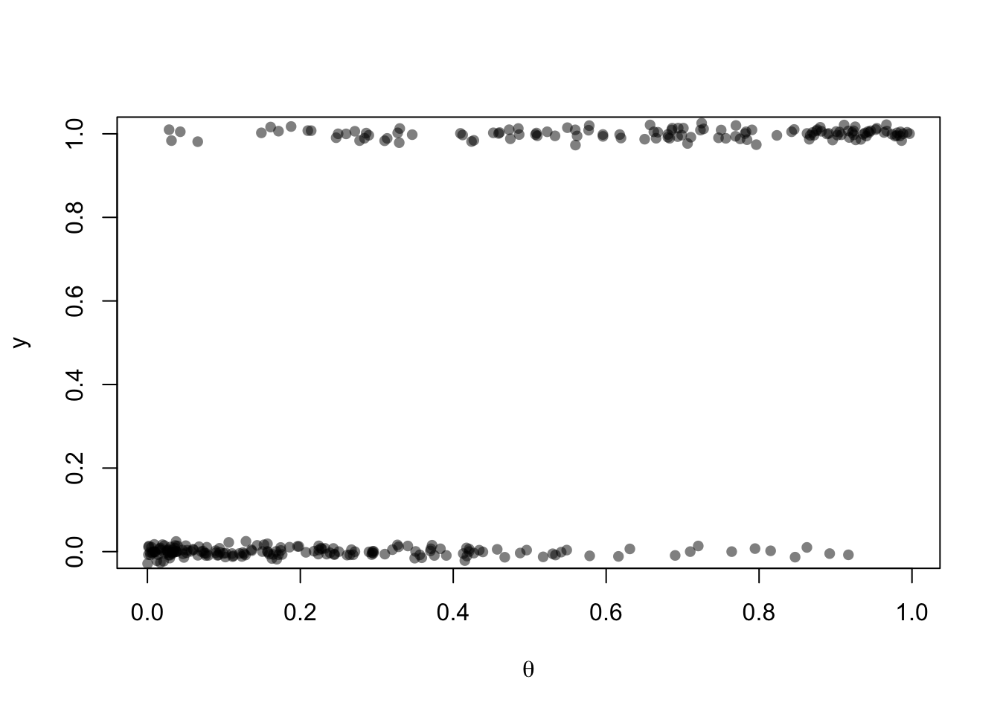
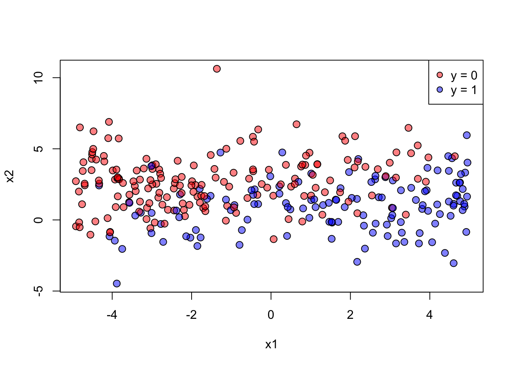
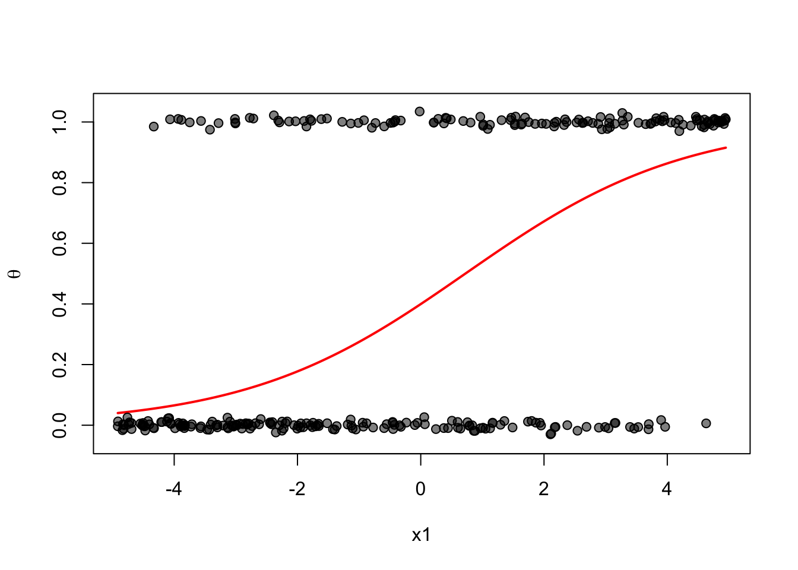
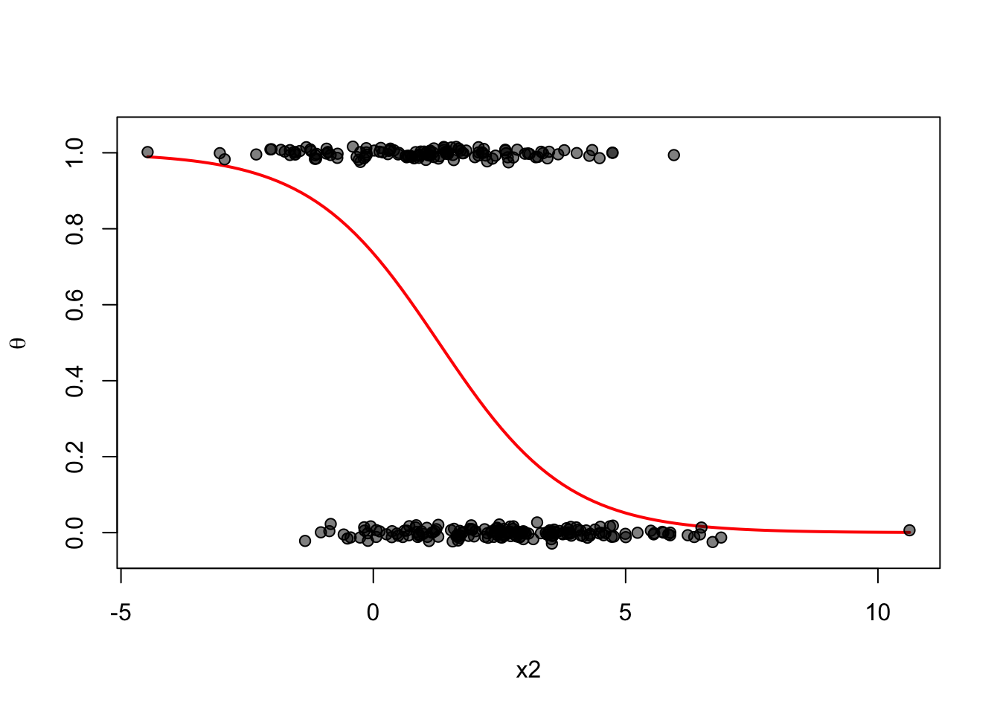
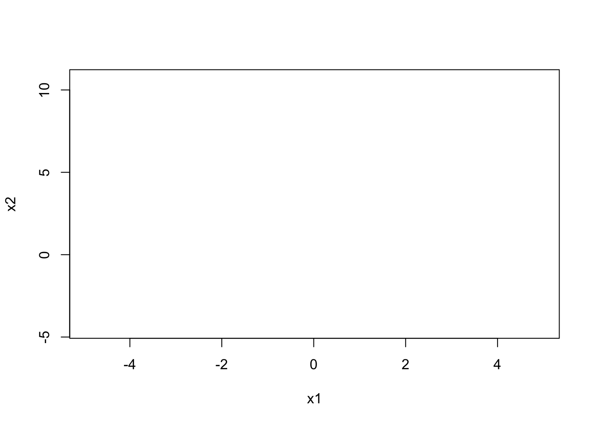
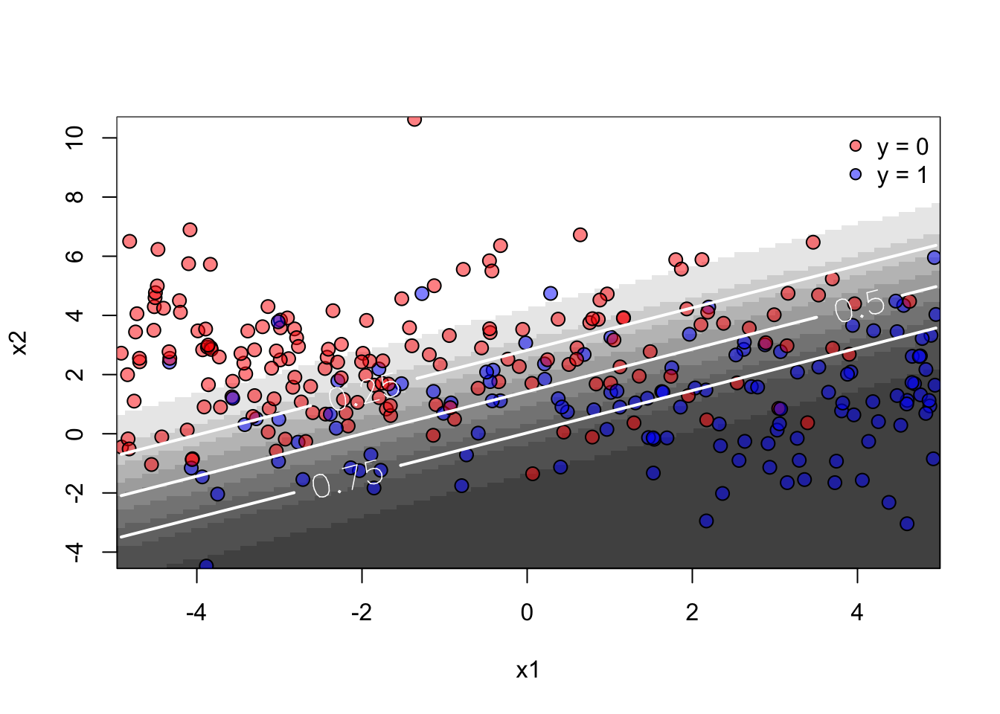

ロジスティック回帰分析について
ロジスティック回帰分析は応答変数が0か1のように二値変数の場合に使う分析手法です。「投票に参加するか否か」などの場合にも使えますが、「AかBか」のような分類の場面でも使える手法です。ここでは説明変数が2つ(\(x_1\)と\(x_2\))の場合を考えてみましょう。
最も単純なロジスティック回帰分析の場合、説明変数と応答変数の関係は以下のように表現できます。
\[ \begin{aligned} Y_i \sim & \text{Bernoulli}(\theta_i),\\ \theta = & \frac{\exp(y_i^*)}{1 + \exp(y_i^*)},\\ y_i^* = & \beta_0 + \beta_1 \cdot x_1 + \beta_2 \cdot x_2. \end{aligned} \]
まず、3行目を見ると線形回帰分析のようにy_i^*がx1とx2の線形結合で表現できるとします。これを逆ロジット関数 (inverse logit function)の引数としたものを\(\theta_i\)とします。これは必ず0から1の間の値をとり、これが\(Y_i\)が1となる確率になります。最後に\(Y_i\)は\(\theta_i\)をパラメーターとするベルヌイ分布から生成されるとします。
以下の例では\(\beta_0 = 1\)、\(\beta_1 = 0.5\)、\(\beta_2 = -0.8\)にします。
仮想データの作成
まずは実習に使う仮想データを作ってみましょう。
set.seed(19861008) # 再現性確保のためにseedを設定
x1 <- runif(300, -5, 5) # x1は(-5, 5)の一様分布から300個抽出
x2 <- rnorm(300, 2, 2) # x2は平均2、標準偏差2の正規分布から300個
# 線形予測子 (linear predictor)
lin.pred <- 1 + 0.5 * x1 - 0.8 * x2
# 線形予測子を逆ロジット関数に投入しthetaを計算
theta <- exp(lin.pred) / (1 + exp(lin.pred))
# 応答変数yはthetaをパラメーターとするベルヌイ分布です
# ただし、Rにはベルヌーイ分布の乱数生成関数がないため、二項分布で
y <- rbinom(300, 1, theta)
# データフレーム化しましょう
df <- data.frame(y = y,
x1 = x1, x2 = x2,
theta = theta)まずは変数間の関係から
まず見るのは変数の記述統計ですね。
summary(df)## y x1 x2 theta
## Min. :0.00 Min. :-4.9151 Min. :-4.4724 Min. :0.0002794
## 1st Qu.:0.00 1st Qu.:-2.8506 1st Qu.: 0.6825 1st Qu.:0.1095960
## Median :0.00 Median :-0.4246 Median : 1.8988 Median :0.3289306
## Mean :0.43 Mean :-0.1772 Mean : 1.9455 Mean :0.4094721
## 3rd Qu.:1.00 3rd Qu.: 2.3687 3rd Qu.: 3.2758 3rd Qu.:0.6994029
## Max. :1.00 Max. : 4.9492 Max. :10.6261 Max. :0.9967745続いて、ちゃんと。プロットのx軸に、y軸にyをプロットします。、左下と右上に点が多く集まっているはずです。
# 点が多いのでポイントを半透明にし、上下に若干のバラツキを与えます。
# バラツキは平均0、標準偏差0.01の正規分布に従います。
plot(x = df$theta, y = df$y + rnorm(300, 0, 0.01),
pch = 16, col = rgb(0, 0, 0, 0.5),
ylim = c(0, 1),
xlab = expression(theta), ylab = "y")
問題ないようですね。次に進みましょう。
つぎは、説明変数と応答変数間の関係をみます。しかし、x軸をx1、y軸をx2にすると、応答変数をどう表現するか悩みますね。ここでは色に分けてみましょう。ピンクは\(y = 0\)、青は\(y = 1\)にしてみます。
plot(x = df$x1, y = df$x2, pch = 21, cex = 1.25,
bg = c(rgb(1, 0, 0, 0.5),
rgb(0, 0, 1, 0.5))[df$y + 1],
col = "black",
xlab = "x1", ylab = "x2")
legend("topright", pch = 21,
pt.bg = c(rgb(1, 0, 0, 0.5), rgb(0, 0, 1, 0.5)),
col = "black", legend = c("y = 0", "y = 1"))
ロジスティック回帰分析の実行
ロジスティックの回帰分析はglm()関数を使います。分析結果はsummary()関数で確認してみましょう。Markdownならstargazerパッケージを使ってもっと綺麗にできますが、可能な限り、パッケージは使わずにやってみましょう。
fit1 <- glm(y ~ x1 + x2, data = df, family = binomial(link = "logit"))
summary(fit1)##
## Call:
## glm(formula = y ~ x1 + x2, family = binomial(link = "logit"),
## data = df)
##
## Deviance Residuals:
## Min 1Q Median 3Q Max
## -2.3682 -0.6562 -0.2109 0.6228 2.6755
##
## Coefficients:
## Estimate Std. Error z value Pr(>|z|)
## (Intercept) 1.12245 0.24744 4.536 5.72e-06
## x1 0.56304 0.07074 7.959 1.74e-15
## x2 -0.78646 0.11116 -7.075 1.49e-12
##
## (Dispersion parameter for binomial family taken to be 1)
##
## Null deviance: 409.99 on 299 degrees of freedom
## Residual deviance: 247.00 on 297 degrees of freedom
## AIC: 253
##
## Number of Fisher Scoring iterations: 5結果を見ると、\(\beta_0, \beta_1, \beta_2\)はそれぞれ1.122、0.563、-0.786であり、最初に設定した1, 0.5, -0.8にかなり近い値が得られましたね。当たり前ですが、\(y\)が確率過程で生成された値である以上、完全に一致することはないでしょう。ただし、サンプルサイズを増やせば増やすほど、真の値には近づきます。
続いて、推定された結果を用いて、各説明変数と応答変数間の関係を見てみましょう。そのためにはx軸を説明変数、y軸を\(y = 1\)の確率 (つまり、\(\theta\)です)を線グラフで表現し、参考のために実測値 (\(y\))を表示させます。ちなみに、x軸に表示させない変数は平均値に固定します。
まずは\(x_1\)と\(\textrm{Pr}(y = 0)\)の関係から確認しましょう。
x1.u <- seq(min(df$x1), max(df$x1), length.out = 100)
pred.x1 <- predict(fit1, newdata = data.frame(x1 = x1.u,
x2 = mean(df$x2)),
type = "response")
plot(x = x1.u, y = pred.x1, type = "l",
col = "red", lwd = 2, lty = 1,
ylim = c(-0.05, 1.05), xlab = "x1", ylab = expression(theta))
points(x = df$x1, y = df$y + rnorm(300, 0, 0.01),
pch = 21, bg = rgb(0, 0, 0, 0.5), col = "black")
同じことをx2に対してもやってみます。
x2.u <- seq(min(df$x2), max(df$x2), length.out = 100)
pred.x2 <- predict(fit1, newdata = data.frame(x1 = mean(df$x1),
x2 = x2.u),
type = "response")
plot(x = x2.u, y = pred.x2, type = "l",
col = "red", lwd = 2, lty = 1,
ylim = c(-0.05, 1.05), xlab = "x2", ylab = expression(theta))
points(x = df$x2, y = df$y + rnorm(300, 0, 0.01),
pch = 21, bg = rgb(0, 0, 0, 0.5), col = "black")
しかし、可能なら一つのプロットに表現したいですね。三次元プロットを作成する方法もありますが、逆に分かりづらい可能性があります。ここでは、等高線図 (contour plot)を作成してみましょう。そのためには以下のようなデータフレームが必要です。
ここで使える関数がouter()関数です。基本的にouter()関数は2つの引数が必要です。動き方を直接見た方が良いかも知れませんね。
outer(X = 2:4, Y = 1:5)## [,1] [,2] [,3] [,4] [,5]
## [1,] 2 4 6 8 10
## [2,] 3 6 9 12 15
## [3,] 4 8 12 16 20このように3行$$5列のマトリックスが出来ました。1行目には1から5が、1列目には2から4が入ってますね。他はどうでしょう。それは、各行と列の掛け算した値が配置されます。3番目のXは4で、5番目のYは5ですよね。この場合、3行5列のマスには4 \(\times\) 5 = 20が入ります。もし、掛け算ではなく足し算にしたいなら、FUN = "+"の引数を追加します。
outer(X = 2:4, Y = 1:5, FUN = "+")## [,1] [,2] [,3] [,4] [,5]
## [1,] 3 4 5 6 7
## [2,] 4 5 6 7 8
## [3,] 5 6 7 8 93行5列のマスには4 + 5 = 9が入ります。このFUN引数は関数を入れることも可能です。つまり、各行と列を\(x_1\)、\(x_2\)が取りうる値とし、この2つの数値を使って\(\theta\)を計算することも可能ということです。もし、\(x_1 = 1, x_2 = -2\)の場合の\(\theta\)を計算するなら
predict(fit1, newdata = data.frame(x1 = 1, x2 = -2), type = "response")## 1
## 0.9629743ここのx1 = 1, x2 = -2の部分を引数とする関数を作ってみましょう。
pred.FUNC <- function(x1, x2) {
predict(fit1, newdata = data.frame(x1 = x1, x2 = x2),
type = "response")
}これだけです。それでは、outer()関数を使ってみましょう。\(x_1\)と\(x_2\)は最小値から最大値までの100分割とします。そうですね、既にx1.uとx2.uとして作成済みです。これを活用します。
Pred.mat <- outer(x1.u, x2.u, pred.FUNC)
head(Pred.mat)## [,1] [,2] [,3] [,4] [,5] [,6] [,7]
## [1,] 0.8667431 0.8522704 0.8365222 0.8194510 0.8010211 0.7812122 0.7600221
## [2,] 0.8730905 0.8591951 0.8440501 0.8276030 0.8098121 0.7906496 0.7701046
## [3,] 0.8791777 0.8658464 0.8512930 0.8354608 0.8183027 0.7997843 0.7798861
## [4,] 0.8850113 0.8722302 0.8582559 0.8430283 0.8264956 0.8086168 0.7893653
## [5,] 0.8905984 0.8783529 0.8649446 0.8503102 0.8343937 0.8171488 0.7985417
## [6,] 0.8959459 0.8842211 0.8713649 0.8573115 0.8420011 0.8253826 0.8074159
## [,8] [,9] [,10] [,11] [,12] [,13] [,14]
## [1,] 0.7374694 0.7135959 0.6884686 0.6621803 0.6348503 0.6066227 0.5776647
## [2,] 0.7481855 0.7249230 0.7003721 0.6746136 0.6477543 0.6199271 0.5912886
## [3,] 0.7586073 0.7359678 0.7120111 0.6868057 0.6604463 0.6330537 0.6047738
## [4,] 0.7687311 0.7467241 0.7233765 0.6987449 0.6729119 0.6459859 0.6181013
## [5,] 0.7785542 0.7571867 0.7344606 0.7104210 0.6851380 0.6587080 0.6312535
## [6,] 0.7880752 0.7673518 0.7452571 0.7218246 0.6971128 0.6712056 0.6442134
## [,15] [,16] [,17] [,18] [,19] [,20] [,21]
## [1,] 0.5481628 0.5183184 0.4883428 0.4584507 0.4288548 0.3997591 0.3713540
## [2,] 0.5620168 0.5323068 0.5023659 0.4724080 0.4426475 0.4132932 0.3845425
## [3,] 0.5757748 0.5462446 0.5163853 0.4864085 0.4565293 0.4269596 0.3979029
## [4,] 0.5894164 0.5601102 0.5303789 0.5004304 0.4704789 0.4407384 0.4114172
## [5,] 0.6029218 0.5738827 0.5443250 0.5144516 0.4844747 0.4546091 0.4250665
## [6,] 0.6162722 0.5875415 0.5582018 0.5284502 0.4984950 0.4685506 0.4388310
## [,22] [,23] [,24] [,25] [,26] [,27] [,28]
## [1,] 0.3438111 0.3172800 0.2918855 0.2677265 0.2448757 0.2233802 0.2032637
## [2,] 0.3565762 0.3295548 0.3036148 0.2788673 0.2553972 0.2332635 0.2125005
## [3,] 0.3695484 0.3420666 0.3156054 0.2902879 0.2662115 0.2434469 0.2220400
## [4,] 0.3827119 0.3548020 0.3278465 0.3019804 0.2773131 0.2539277 0.2318817
## [5,] 0.3960496 0.3677465 0.3403264 0.3139355 0.2886955 0.2647019 0.2420239
## [6,] 0.4095438 0.3808846 0.3530317 0.3261428 0.3003510 0.2757642 0.2524639
## [,29] [,30] [,31] [,32] [,33] [,34] [,35]
## [1,] 0.1845284 0.1671576 0.1511191 0.1363674 0.1228473 0.1104962 0.09924639
## [2,] 0.1931201 0.1751143 0.1584575 0.1431103 0.1290216 0.1161319 0.10437560
## [3,] 0.2020128 0.1833663 0.1660826 0.1501286 0.1354582 0.1220155 0.10973760
## [4,] 0.2112078 0.1919166 0.1739988 0.1574279 0.1421635 0.1281541 0.11533958
## [5,] 0.2207056 0.2007677 0.1822098 0.1650131 0.1491435 0.1345541 0.12118860
## [6,] 0.2305056 0.2099209 0.1907189 0.1728889 0.1564037 0.1412220 0.12729156
## [,36] [,37] [,38] [,39] [,40] [,41]
## [1,] 0.08902729 0.07976724 0.07139487 0.06384030 0.05703601 0.05091750
## [2,] 0.09368329 0.08398359 0.07520484 0.06727633 0.06012934 0.05369789
## [3,] 0.09855644 0.08840141 0.07920079 0.07088330 0.06337917 0.05662105
## [4,] 0.10365409 0.09302801 0.08338992 0.07466817 0.06679215 0.05969331
## [5,] 0.10898353 0.09787076 0.08777950 0.07863803 0.07037512 0.06292114
## [6,] 0.11455197 0.10293700 0.09237686 0.08280007 0.07413502 0.06631121
## [,42] [,43] [,44] [,45] [,46] [,47]
## [1,] 0.04542373 0.04049742 0.03608518 0.03213756 0.02860899 0.02545764
## [2,] 0.04791928 0.04273444 0.03808815 0.03392912 0.03020998 0.02688716
## [3,] 0.05054467 0.04508922 0.04019766 0.03581686 0.03189763 0.02839462
## [4,] 0.05330585 0.04756730 0.04241885 0.03780552 0.03367628 0.02998399
## [5,] 0.05620894 0.05017443 0.04475705 0.03990002 0.03555046 0.03165942
## [6,] 0.05926023 0.05291651 0.04721779 0.04210549 0.03752490 0.03342525
## [,48] [,49] [,50] [,51] [,52] [,53]
## [1,] 0.02264533 0.02013728 0.01790191 0.01591066 0.01413771 0.01255980
## [2,] 0.02392081 0.02127457 0.01891540 0.01681334 0.01494133 0.01327493
## [3,] 0.02526627 0.02247462 0.01998508 0.01776631 0.01578990 0.01403021
## [4,] 0.02668534 0.02374071 0.02111396 0.01877226 0.01668584 0.01482781
## [5,] 0.02818181 0.02507631 0.02230516 0.01983402 0.01763171 0.01567003
## [6,] 0.02975963 0.02648500 0.02356194 0.02095455 0.01863018 0.01655929
## [,54] [,55] [,56] [,57] [,58] [,59]
## [1,] 0.01115600 0.009907536 0.008797542 0.007810925 0.006934180 0.006155236
## [2,] 0.01179216 0.010473258 0.009300478 0.008257929 0.007331380 0.006508109
## [3,] 0.01246414 0.011070921 0.009831881 0.008730288 0.007751154 0.006881072
## [4,] 0.01317390 0.011702287 0.010393328 0.009229415 0.008194765 0.007275252
## [5,] 0.01392351 0.012369209 0.010986480 0.009756797 0.008663543 0.007691837
## [6,] 0.01471514 0.013073636 0.011613087 0.010314001 0.009158890 0.008132081
## [,60] [,61] [,62] [,63] [,64] [,65]
## [1,] 0.005463312 0.004848790 0.004303091 0.003818571 0.003388421 0.003006580
## [2,] 0.005776749 0.005127152 0.004550268 0.004038030 0.003583248 0.003179522
## [3,] 0.006108057 0.005421408 0.004811576 0.004270047 0.003789234 0.003362378
## [4,] 0.006458243 0.005732454 0.005087813 0.004515335 0.004007013 0.003555712
## [5,] 0.006828368 0.006061237 0.005379823 0.004774646 0.004237256 0.003760121
## [6,] 0.007219550 0.006408756 0.005688497 0.005048774 0.004480669 0.003976234
## [,66] [,67] [,68] [,69] [,70] [,71]
## [1,] 0.002667654 0.002366843 0.002099881 0.001862975 0.001652751 0.001466215
## [2,] 0.002821155 0.002503079 0.002220785 0.001970265 0.001747955 0.001550691
## [3,] 0.002983463 0.002647135 0.002348633 0.002083721 0.001848634 0.001640026
## [4,] 0.003155079 0.002799459 0.002483823 0.002203696 0.001955100 0.001734499
## [5,] 0.003336533 0.002960522 0.002626774 0.002330563 0.002067685 0.001834403
## [6,] 0.003528387 0.003130823 0.002777930 0.002464715 0.002186738 0.001940051
## [,72] [,73] [,74] [,75] [,76] [,77]
## [1,] 0.001300705 0.001153856 0.001023569 0.0009079807 0.0008054345 0.0007144615
## [2,] 0.001375658 0.001220357 0.001082570 0.0009603249 0.0008518721 0.0007556580
## [3,] 0.001454924 0.001290687 0.001144968 0.0010156837 0.0009009847 0.0007992280
## [4,] 0.001538750 0.001365063 0.001210957 0.0010742302 0.0009529260 0.0008453080
## [5,] 0.001627399 0.001443720 0.001280746 0.0011361477 0.0010078586 0.0008940425
## [6,] 0.001721145 0.001526902 0.001354550 0.0012016297 0.0010659546 0.0009455840
## [,78] [,79] [,80] [,81] [,82]
## [1,] 0.0006337573 0.0005621641 0.0004986546 0.0004423167 0.0003923414
## [2,] 0.0006703034 0.0005945842 0.0005274140 0.0004678284 0.0004149718
## [3,] 0.0007089555 0.0006288728 0.0005578312 0.0004948109 0.0004389071
## [4,] 0.0007498347 0.0006651375 0.0005900015 0.0005233487 0.0004642222
## [5,] 0.0007930692 0.0007034919 0.0006240260 0.0005535316 0.0004909967
## [6,] 0.0008387945 0.0007440563 0.0006600113 0.0005854541 0.0005193147
## [,83] [,84] [,85] [,86] [,87]
## [1,] 0.0003480106 0.0003086872 0.0002738059 0.0002428652 0.0002154201
## [2,] 0.0003680849 0.0003264940 0.0002896011 0.0002568760 0.0002278480
## [3,] 0.0003893168 0.0003453276 0.0003063073 0.0002716949 0.0002409927
## [4,] 0.0004117729 0.0003652473 0.0003239769 0.0002873684 0.0002548955
## [5,] 0.0004355237 0.0003863156 0.0003426654 0.0003039458 0.0002696001
## [6,] 0.0004606438 0.0004085986 0.0003624316 0.0003214792 0.0002851528
## [,88] [,89] [,90] [,91] [,92]
## [1,] 0.0001910759 0.0001694823 0.0001503286 0.0001333393 0.0001182698
## [2,] 0.0002020996 0.0001792604 0.0001590019 0.0001410325 0.0001250936
## [3,] 0.0002137592 0.0001896026 0.0001681755 0.0001491695 0.0001323111
## [4,] 0.0002260912 0.0002005413 0.0001778782 0.0001577759 0.0001399450
## [5,] 0.0002391346 0.0002121110 0.0001881407 0.0001668787 0.0001480193
## [6,] 0.0002529302 0.0002243480 0.0001989951 0.0001765067 0.0001565593
## [,93] [,94] [,95] [,96] [,97]
## [1,] 0.0001049032 9.304710e-05 8.253088e-05 7.320312e-05 6.492953e-05
## [2,] 0.0001109559 9.841581e-05 8.729286e-05 7.742694e-05 6.867599e-05
## [3,] 0.0001173578 1.040942e-04 9.232959e-05 8.189445e-05 7.263862e-05
## [4,] 0.0001241290 1.101003e-04 9.765690e-05 8.661972e-05 7.682987e-05
## [5,] 0.0001312909 1.164528e-04 1.032916e-04 9.161761e-05 8.126294e-05
## [6,] 0.0001388659 1.231719e-04 1.092513e-04 9.690384e-05 8.595177e-05
## [,98] [,99] [,100]
## [1,] 5.759098e-05 5.108182e-05 4.530832e-05
## [2,] 6.091404e-05 5.402931e-05 4.792268e-05
## [3,] 6.442882e-05 5.714687e-05 5.068790e-05
## [4,] 6.814640e-05 6.044430e-05 5.361266e-05
## [5,] 7.207847e-05 6.393198e-05 5.670618e-05
## [6,] 7.623740e-05 6.762089e-05 5.997818e-05これで100$\(100の行列が作られ、各セルには予測確率 (\)$)が格納されることになります。これを使って等高線図を作る方法はcontour()関数を使います。
plot(x = x1.u, y = x2.u, type = "n", xlab = "x1", ylab = "x2")
先ほどの散布図に等高線を追加したものです。なんか、寂しい気もしますね。予測確率に応じて背景の色がグラデーションで変わるにようにしてみましょう。ここで使うのはimage()関数です。予測確率 (\(\theta\))が高いほど黒、低いほど白になるようにします。
image(x = x1.u, y = x2.u, z = Pred.mat,
col = rgb(seq(1, 0, length.out = 10),
seq(1, 0, length.out = 10),
seq(1, 0, length.out = 10), 0.75),
breaks = seq(0, 1, 0.1), xlab = "x1", ylab = "x2")
points(x = df$x1, y = df$x2, pch = 21, cex = 1.25,
bg = c(rgb(1, 0, 0, 0.5),
rgb(0, 0, 1, 0.5))[df$y + 1],
col = "black")
contour(x = x1.u, y = x2.u, z = Pred.mat, lwd = 2, col = "white",
levels = c(0.25, 0.5, 0.75), labcex = 1.5, add = TRUE)
legend("topright", pch = 21,
pt.bg = c(rgb(1, 0, 0, 0.5), rgb(0, 0, 1, 0.5)),
col = "black", bty = "n", legend = c("y = 0", "y = 1"))
これで完成です。色がちょっと気に入らないんですが、これはcolorspaceパッケージなどを使えば、より見やすいプロットが作れると思います。ちなみに、image()関数内のcol = ...引数をcol = cm.colors(10)とかにしてみても良いかも知れませんね（やってみて下さい）。
いろんな指標で分類性能を確認する
これまでのように可視化を通じて分類器・モデルを評価することは可能ですが、複数のモデルを比較するときには、やはりなんらかの基準が必要です。モデルの評価・比較指標にはいくつかの種類がありますが、ここでは以下の指標を計算してみましょう。
- 的中率/エラー率 (Accuracy / Error Rate)
- \(\kappa\)統計量
- Akaike/Bayesian Information Criteria (AIC/BIC)
- Leave-One-Out (LOO) Cross Validation
- k-fold Cross Validation
他にもPseudo \(R^2\)などがありますが、ここでは省略します。最近流行りのWAICはベイジアン推定後、事後分布のデータが必要なのでここでは難しいですね。
的中率/エラー率
実際のデータ (\(y\))と分類の予測結果 (\(\hat{y}\))を2$$2のテーブルで表すと以下のようになります。ちなみに、以下のような表を混同行列 (confusion matrix)と呼びます。
| \(\hat{y}=1\) | \(\hat{y}=0\) | |
| \(y=1\) | True Positive | False Positive |
| \(y=0\) | False Positive | True Positive |
ここでTPとTNは正しく分類されているケースを意味します。全体の中、TP + TNの比率が的中率になります。この的中率を1から引いたらエラー率になります。実際に計算してみましょう。
# まずは予測確率から
Pred.fit1 <- predict(fit1, type = "response")
# 予測確率が0.5以上なら1、未満なら0にします
Pred.fit1 <- ifelse(Pred.fit1 >= 0.5, 1, 0)
# 混同行列の作成
Tab.Accuracy <- table(df$y, Pred.fit1)
print(Tab.Accuracy)## Pred.fit1
## 0 1
## 0 151 20
## 1 29 100正しく分類されているケースの数は151 + 100 = 251であり、これは的中率で言うと0.837になります。同様に、エラー率は1から的中率を引いたものなので0.163になりますね。
\(\kappa\)統計量
\(\kappa\)はローマ字のKではなく、ギリシャ文字であり、「カッパ」と読みます。的中率は直感的でわかりやすい指標ですが、問題があります。それはデータ内のyの分布に大きく依存するという点です。たとえば、実際のデータに\(y = 0\)のケースが90個、\(y = 1\)のケースが10個あるとします。この場合、ロジットやKNN、判別分析のような分類機を使わず、すべて0に予測しても的中率は0.9になります。0/1分類の場合、分類機を使わなくても的中率は必ず0.5以上確保できることを意味します。この限界を克服するために考案された指標の一つが\(\kappa\)統計量です。詳細はCohen (1960)1を読んで下さい。ここでは計算方法だけ紹介します。
先ほどの混同行列を基準に説明します。
\[ \begin{aligned} p_0 = & \frac{TP + TN}{N}, \\ p_e = & \left( \frac{TP + FP}{N} \cdot \frac{TP + FN}{N} \right) + \left( \frac{FN + TN}{N} \cdot \frac{FP + TN}{N} \right),\\ \kappa = & \frac{p_0 - p_e}{1 - p_e} \end{aligned} \]
ここで\(N\)はデータ内のケース数です。それじゃ混同行列から\(\kappa\)統計量を計算する関数を作ってみましょう。
Calc_Kappa <- function(tab){
p0 <- sum(diag(tab)) / sum(tab) # 的中率のことです
pe1 <- (sum(tab[, 2]) / sum(tab)) * (sum(tab[2, ]) / sum(tab))
pe2 <- (sum(tab[, 1]) / sum(tab)) * (sum(tab[1, ]) / sum(tab))
pe <- pe1 + pe2
k <- (p0 - pe) / (1 - pe)
return(round(k, 3))
}
Calc_Kappa(Tab.Accuracy)## [1] 0.664\(\kappa\)統計量は0.664ですね。相関係数と同様、どれくらいの\(\kappa\)が高いかについては合意された基準がありません。ここではViera and Garrett (2005)2の基準だけを紹介します。
| \(\kappa\)の範囲 | 評価 |
| \(\kappa \leq 0\) | Less than chance agreement |
| \(0.01 \leq \kappa \leq 0.20\) | Slight agreement |
| \(0.21 \leq \kappa \leq 0.40\) | Fair agreement |
| \(0.41 \leq \kappa \leq 0.60\) | Moderate agreement |
| \(0.61 \leq \kappa \leq 0.80\) | Substantial agreement |
| \(0.81 \leq \kappa\) | Almost perfect agreement |
この基準だと、ロジスティック回帰を用いた分類機は「かなり一致 (Substantial agreement)」していると評価できるでしょう。
AIC / BIC
先ほどの、ここで紹介するAICとBICはそのぼんやりとした基準すらございません。しかし、モデルの選択という場面では今でもAICとBICのような情報量規準は広く使われる指標です。情報量規準については小西・北川 (2004)3やMcElreath (2016)4の第6章を参照して下さい。ここでは計算方法だけ紹介しましょう。
\[ \begin{aligned} AIC = & -2 \log L + 2K, \\ BIC = & -2 \log L + K \log N. \end{aligned} \]
式内のLは尤度5、\(K\)はパラメーターの数、\(N\)はサンプルサイズです。今回、パラメーターは切片と説明変数の係数なのでK = 3になります。対数尤度はlogLik()関数から計算できます。
AIC <- -2 * as.numeric(logLik(fit1)) + 2 * 3
BIC <- -2 * as.numeric(logLik(fit1)) + 3 * log(nrow(df))
print(AIC); print(BIC)## [1] 252.9979## [1] 264.1093AICとBICはそれぞれ252.998、264.109です。良いモデルほどAICとBICは小さくなります。複数のモデルをフィッティングし、どのモデルを採用するか悩む場合、情報量規準は便利な指標です。
LOO Cross Validation
今回はCross Validation (CV)について紹介します。これまで \(\kappa\) 統計量、的中率、情報量規準はCVをするにパソコンのパワーが足りなかった時代に考案されたものです。しかし、機械学習が手軽に実装できるようになった今では、CVを用いたモデル/分類器の評価が広く使われつつあります。
分類機の第一目標は予測の精度を最大化することです。つまり、\(X\)というデータを用いて構築した分類器に、これから入手する新しいデータ (\(X^{\prime}\))を投入することで結果を予測することです。しかし、これまでの評価指標\(X\)から生成された分類機に、\(X\)を投入したものなので性能が過大評価されやすくなります。なぜなら、分類機は\(X\)の予測に最適化されているだけで、\(X^{\prime}\)の予測精度を最大化するものではないからです。
しかし、\(X^{\prime}\)を入手し、予測を行うとしても、まだ結果 (\(y^{\prime}\))が未知なので、評価のしようがないです。ここで使われるのがCVです。最も単純、かつ強力なCVがLeave-One-Out (LOO) CVです。LOO CVは以下のように計算できます。
- 既存のデータ (\(X\))から\(x_1\)を除外し、分類機を生成 → \(x_1\)を投入して予測し、結果を比較する。
- \(x_1\)を戻し、次は\(x_2\)をデータから除外してから分類機を生成 → \(x_2\)を投入して予測し、結果を比較する。
- \(x_2\)を戻し、次は\(x_3\)をデータから除外してから分類機を生成 → \(x_3\)を投入して予測し、結果を比較する。
- このような手順を\(x_N\)まで繰り返し、エラー率を計算する。
説明よりは、実際にやってみた方がいいでしょう。まずはindex番目のケースを除外して分類機の生成、index番目データを用いて予測結果を比較するLOO.Logit()関数を作成します。
LOO.Logit <- function(index){
# index番目のデータを除いてModel Fitting
new.fit <- glm(y ~ x1 + x2, data = df[-index, ],
family = binomial("logit"))
# index番目のデータを投入して予測
new.pred <- predict(new.fit, newdata = data.frame(x1 = df$x1[index],
x2 = df$x2[index]),
type = "response")
new.pred <- as.numeric(new.pred >= 0.5)
# 実際のデータと比較。一致するなら1、不一致なら0
return(as.numeric(new.pred == df$y[index]))
}続いて、index = 1からindex = 200まで実行してみます。for()文を使ってもいいですが、ベクトルで渡した方が早いでしょう。
LOOCV <- LOO.Logit(1:200)
print(LOOCV)## [1] 1 1 1 0 1 1 1 0 1 1 1 0 1 1 1 1 1 1 1 1 1 1 1 1 1 1 1 1 1 1 1 0 1 1 1 1 1
## [38] 1 1 1 0 1 1 1 1 1 1 0 0 1 0 1 1 1 1 1 0 1 1 0 1 1 1 1 0 1 1 1 1 1 1 1 0 1
## [75] 1 0 1 0 1 1 1 1 0 1 0 1 0 1 1 1 0 1 1 1 0 1 1 1 1 1 1 1 1 1 1 1 1 1 1 1 1
## [112] 1 1 1 1 1 1 1 0 1 1 1 1 1 1 1 1 1 1 1 1 1 1 0 0 1 1 1 1 1 1 0 1 1 0 1 1 1
## [149] 1 1 1 1 0 0 1 1 1 1 1 1 1 1 1 0 0 1 1 1 1 1 0 0 1 1 1 0 1 1 1 1 1 1 1 1 1
## [186] 1 1 0 0 1 1 1 0 1 1 0 0 1 1 11 - mean(LOOCV)## [1] 0.18この0.18がエラー率です。この場合、200ケースの中、164個が正しく予測されましたよね。悪くない性能だと言えます。
LOO CVは手元のデータをほとんど使う (\(N - 1\))という点で強力なCV手法ですが問題があります。それはケースの数だけ繰り返す必要があるという点です。今回の例は一瞬で出来ましたが、データのサイズが大きい場合やNeural network, Support vector machine (SVM)など処理時間が掛かる手法にはかなり無理があります。LOO CVの精度を若干犠牲にして効率性を重視したものが、次に紹介するk-fold CVです。
k-fold Cross Validation
k-fold Cross ValidationはLOO非常に近い概念です。ただし、今回は分析をN回行うのではなく、k回行います。kをどれくらいにするかは一般的な合意はないと思いますが、k = 5かk = 10が主流です。ここではk = 5の例で説明します。
やり方は簡単です。データをランダムな順でk分割します。そうしたらk個のデータの塊で出来るわけです。ここでk-1個の塊 (train set) で分類機を生成し、残りの1個 (test set)で検証を行い、エラー率を算出します。つづいて、検証で用いたデータは分類規生成用のデータの方に戻し、他の1個の塊を検証用にします。最後に得られたk個のエラー率の平均値を計算します。これならk回でCVが済みますね。それではやってみましょう。
# まずデータの順番をランダム化します
k.index <- sample(1:nrow(df), nrow(df), replace = FALSE)
# 次は、40個ずつのデータに分割します。
k1.index <- k.index[1:40]
k2.index <- k.index[41:80]
k3.index <- k.index[81:120]
k4.index <- k.index[121:160]
k5.index <- k.index[161:200]
# k-fold CVの関数を作成
# LOO CVとほぼ同じです。
kFold.Logit <- function(index.vec){
new.fit <- glm(y ~ x1 + x2, data = df[-index.vec, ],
family = binomial("logit"))
new.pred <- predict(new.fit, newdata = data.frame(x1 = df$x1[index.vec],
x2 = df$x2[index.vec]),
type = "response")
new.pred <- as.numeric(new.pred >= 0.5)
cv.tab <- table(df$y[index.vec], new.pred)
return(1 - sum(diag(cv.tab)) / sum(cv.tab))
}
# 5-fold CVの実行
kFold.Error <- rep(NA, 5)
kFold.Error[1] <- kFold.Logit(k1.index)
kFold.Error[2] <- kFold.Logit(k1.index)
kFold.Error[3] <- kFold.Logit(k1.index)
kFold.Error[4] <- kFold.Logit(k1.index)
kFold.Error[5] <- kFold.Logit(k1.index)
print(mean(kFold.Error))## [1] 0.175CVの結果、平均エラー率は0.175です。先ほどのLOO CVの結果と大きな差はありませんね。
以上、紹介したモデル評価指標は複数モデル間の比較に有用です。複数のモデルというのは関数型が異なるモデル、あるいは異なる分析手法などを指します。今回はモデルが一つしかありませんでしたが、まだ機会があったら色んな可視化とモデル比較をしてみたいと思います。
Cohen, Jacob (1960). “A coefficient of agreement for nominal scales”. Educational and Psychological Measurement. 20 (1): 37–46↩︎
Viera, Anthony J., and Joanne M. Garrett. 2005. “Understanding interobserver agreement: The kappa statistic.” Family Medicine. 37 (5): 360-363↩︎
小西貞則・北川源四郎, 2004, 『情報量規準』朝倉書店↩︎
McElreath, Richard, 2016, Statistical Rethinking: A Bayesian Course with Examples in R and Stan. Chapman and Hall/CRC.↩︎
もし最尤法ではなく、線形回帰のように最小二乗法 (Ordinary Least Squares; OLS)で推定した場合、尤度は計算できません。この場合は尤度の代わりに、残差自乗和 (Residual Sum of Squares; RSS)を使います。ただし、式内の\(L\)を\(RSS\)に置換するだけでは情報量規準は計算できません。詳細はネットとかで調べてみましょう。↩︎